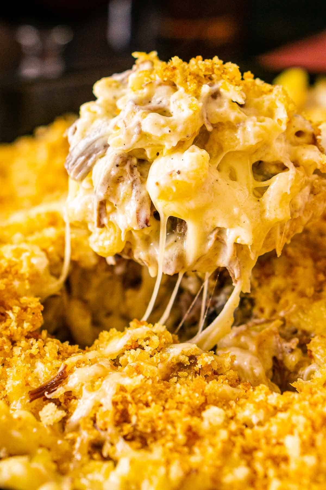

Hearty Brisket Mac and Cheese

Description
This hearty mac and cheese is loaded with mouthwatering slow-cooked brisket that falls apart in your mouth. It is the perfect comfort food for a cold winters night
It does require a considerable amount of time to cook, so it is perfect for a lazy Saturday spent at home but is sure to be a crowd pleaser!
Ingredients
- 1 pound dried elbow macaroni
- 1/2 cup plus 1 table spoon salted butter divided
- 1/2 cup panko crumbs
- 1/2 cup all purpose flour
- 4 garlic cloves grated or minced
- 2 cups whole milk room temperature
- 2 cups heavy cream room temperature
- 1 teaspoon salt
- 1/2 teaspoon black pepper
- 3 cups freshly grated smoked cheddar divided
- 3 cups freshly grated Gouda divided
- 2 cups chopped cooked brisket
Directions
- Pre-heat oven to 325 degrees while bringing a large pot of salted water to a boil. Cook the elbow macaroni two minutes less than what the package directions dictate. Drain and reserve remaining pasta in a large mixing bowl
- While the water boils and the pasta cooks, melt 1 tablespoon butter in a large skillet over medium-high heat. Add the panko crumbs and stir to coat. Continue to cook, stirring every so often, until the panko crumbs turn golden brown. Remove from heat and reserve.
- Melt the remaining ½ cup butter in the pot over medium heat. Add garlic and cook for 30 seconds, stirring constantly. Whisk in the flour. Continue to whisk constantly for about three minutes.
- Slowly pour in the milk and heavy cream, whisking constantly to create a smooth mixture. Season with salt and black pepper. Bring to a simmer, whisking frequently. Do not boil as that can cause the milk to separate and leave you with a grainy sauce.
- Turn off the heat. Stir in 1 ½ cups smoked cheddar and 1 ½ cups smoked Gouda until the cheese melts and becomes one cohesive mixture. Add the macaroni and brisket to the pot with the cheese sauce and stir to coat. If you prefer a stove-top mac and cheese, serve immediately. Otherwise, proceed to the next step.
- Pour half the mac and cheese into a greased 9-inch-by-13-inch baking dish or 12-inch cast-iron skillet. Layer half the remaining cheese on top. Pour the rest of the macaroni on the cheese layer and top with the last of the cheese. Sprinkle the browned panko crumbs on top.
- Bake until hot and bubbly, about 15-20 minutes. Enjoy!
Odin Recipes